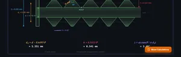
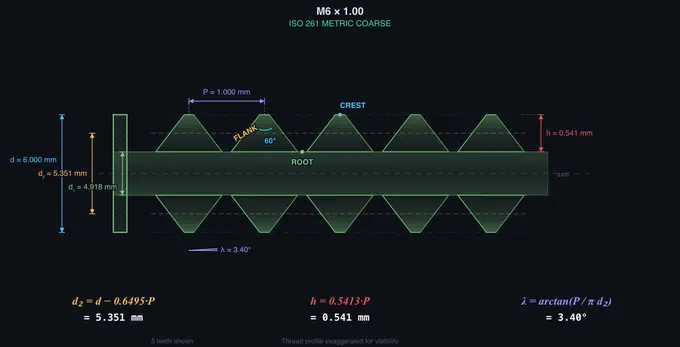
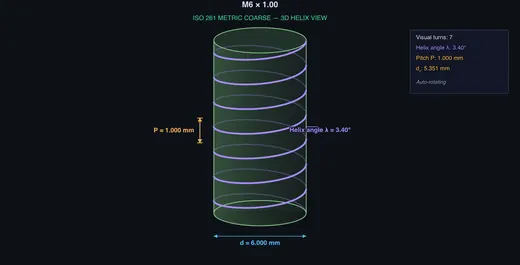
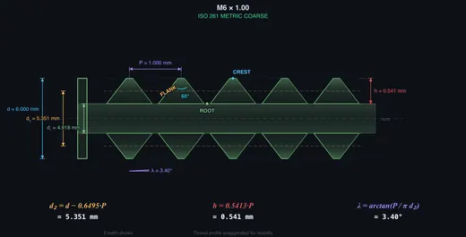

Thread Nomenclature & Metric Thread Chart
ISO 261 metric thread dimensions — Learn • Explore • Practice • Quiz
Display Controls
1 Overview
The Screw Thread Nomenclature Trainer teaches the ISO 261 metric screw thread system through interactive visualization and calculation. The canvas supports two viewing modes: a 2D cross-section that shows the truncated ISO thread profile in detail, and a 3D isometric helix view that visualizes how the thread wraps around the cylinder. Both views update in real time as you change parameters.
The trainer covers nine standard metric thread sizes from M2 to M12 with adjustable pitch (coarse, fine, or custom). All key dimensions are calculated and displayed: major diameter (d), pitch diameter (d₂), minor diameter (d₁), thread depth (h), pitch (P), thread angle (60°), and helix angle (λ). Hover any dimension on the canvas or in the readout cards and the matching element on the other side highlights.
2 Setting Up the Job

The trainer opens in Explore mode with a 2D cross-section view by default. Use the View toggle in the controls bar to switch between Section and 3D Helix views. Mode tabs (Learn / Explore / Practice / Quiz) sit alongside the view toggle.
To explore: (1) Pick a thread size from the dropdown (e.g., M6). (2) The default coarse pitch is shown. (3) Click a standard pitch preset or drag the pitch slider; you can also use the −/+ stepper or type into the number box. (4) Watch the canvas animate smoothly between pitch values. (5) Toggle individual canvas overlays (Dimensions, Part Labels, Equation, Pitch Line, Grid) using the checkboxes. (6) Open the "Step-by-step Calculation" panel below, or click the floating "Show Calculations" button for a full KaTeX-rendered derivation modal.
3 Interaction & Highlighting
Hover any dimension on the canvas (d, d₂, d₁, P, h, 60°, λ) and its readout card highlights. Hover a readout row in the Diameters or Thread Profile panel and the corresponding annotation on the canvas highlights with a tooltip. This bidirectional linking helps you connect terminology with the visual geometry.
Keyboard: use Left/Right arrow keys to navigate Learn-mode lessons, or to step the pitch slider one increment in Explore mode. Right-click the canvas for a context menu (Export PNG, Copy All Values as CSV, Copy Designation, Toggle 3D view, Reset). The Calc FAB at the bottom-right of the canvas opens a step-by-step LaTeX-rendered derivation of every formula in classical mathematical notation.
4 3D Helix View
Click the 3D Helix view button to switch from cross-section to an isometric rendering of the threaded shaft. The view shows a cylinder with the helix path drawn around it, illustrating how a thread is fundamentally a helical ridge. The helix angle λ is visualized directly: steeper helix corresponds to larger pitch (or smaller diameter).
The 3D view auto-rotates slowly and responds to pitch changes — finer pitch tightens the helix wrap and shows more turns over the same axial length. Toggle back to Section view to see the cross-section dimensions. The Equation toggle works in both views.
5 Learn Mode
Learn mode steps you through five lessons: (1) What is a Screw Thread? — with an animated helix unwrap demonstrating the relationship between circumference, pitch, and helix angle. (2) Thread Terminology — crest, root, flank, thread angle. (3) Key Dimensions — an M10 worked example with all formulas. (4) ISO 261 Designations — how to read M8×1.25. (5) Coarse vs Fine — side-by-side M10 comparison.
Navigate using Prev/Next buttons, the progress dots, or Left/Right arrow keys.
6 Practice & Quiz
Practice mode presents a random thread designation (e.g., M8 × 1.25) and asks you to calculate three dimensions: pitch diameter (d₂), minor diameter (d₁), and thread depth (h). Enter your values to three decimal places and click "Check". The trainer marks each as correct (within 0.002 mm tolerance) or incorrect. Click "New" for a fresh problem.
Quiz mode runs five timed questions where you must calculate a specific dimension (d₂, d₁, h, or λ). After five questions you see your score with a star rating and a per-question review.
7 Tips & Best Practices
- Memorise the three key formulas: d₂ = d − 0.6495P, d₁ = d − 1.0825P, h = 0.5413P. These constants come from the 60° ISO metric thread geometry and 5H/8 truncation.
- The major diameter (d) and thread angle (60°) are always fixed for a given thread size. Only pitch-dependent dimensions change.
- Coarse pitch is the default when no pitch is specified (e.g., M10 means M10 × 1.5). Fine pitch must always be specified explicitly.
- Use the pitch slider in Explore mode to build intuition for how pitch affects thread depth and minor diameter. The canvas animates smoothly, making the relationship visible.
- The helix angle λ increases with pitch and decreases with diameter. It is typically small (2–5°) for standard fastener threads — visible clearly in the 3D Helix view.
- Click "Show Calculations" to see the full derivation in classical mathematical notation (KaTeX).
- Right-click the canvas to export a PNG or copy values to spreadsheet (CSV).
ISO 261 Screw Thread Nomenclature — Interactive Trainer

A screw thread is a helical ridge wrapped around a cylinder, defined by five primary dimensions: major diameter (d), pitch diameter (d₂), minor diameter (d₁), pitch (P), and thread depth (h). ISO 261 fixes the thread angle at 60° for all metric threads. This trainer lets you adjust pitch interactively in 2D cross-section or 3D helix view and watch every derived dimension update in real time.
What You’ll Learn
This trainer covers the complete ISO 261 metric screw thread system: identifying and calculating all key dimensions in classical mathematical notation, reading designations like M8×1.25, distinguishing coarse from fine pitch, and visualising the helix angle in 3D.


Thread Nomenclature & Metric Thread Chart — ISO 261 Pitch Sizes
Complete ISO 261 coarse and fine metric thread series with tapping drill sizes. All dimensions are calculated from the ISO 68-1 basic profile, so they match ISO 724 exactly. Type a size to filter — for example M12 or 12.
Coarse Series (ISO 261)
| Designation | Pitch P mm | Pitch dia d₂ mm | Minor d₃ ext, mm | Minor D₁ int, mm | Thread ht h₃ mm | Stress area Aₛ mm² | Tap drill mm (~77%) |
|---|---|---|---|---|---|---|---|
| M1 | 0.25 | 0.838 | 0.693 | 0.729 | 0.153 | 0.46 | 0.75 |
| M1.2 | 0.25 | 1.038 | 0.893 | 0.929 | 0.153 | 0.73 | 0.95 |
| M1.4 | 0.3 | 1.205 | 1.032 | 1.075 | 0.184 | 0.98 | 1.1 |
| M1.6 | 0.35 | 1.373 | 1.171 | 1.221 | 0.215 | 1.27 | 1.25 |
| M1.8 | 0.35 | 1.573 | 1.371 | 1.421 | 0.215 | 1.7 | 1.45 |
| M2 | 0.4 | 1.74 | 1.509 | 1.567 | 0.245 | 2.07 | 1.6 |
| M2.5 | 0.45 | 2.208 | 1.948 | 2.013 | 0.276 | 3.39 | 2.05 |
| M3 | 0.5 | 2.675 | 2.387 | 2.459 | 0.307 | 5.03 | 2.5 |
| M3.5 | 0.6 | 3.11 | 2.764 | 2.85 | 0.368 | 6.78 | 2.9 |
| M4 | 0.7 | 3.545 | 3.141 | 3.242 | 0.429 | 8.78 | 3.3 |
| M5 | 0.8 | 4.48 | 4.019 | 4.134 | 0.491 | 14.18 | 4.2 |
| M6 | 1 | 5.35 | 4.773 | 4.917 | 0.613 | 20.12 | 5 |
| M8 | 1.25 | 7.188 | 6.466 | 6.647 | 0.767 | 36.61 | 6.75 |
| M10 | 1.5 | 9.026 | 8.16 | 8.376 | 0.92 | 57.99 | 8.5 |
| M12 | 1.75 | 10.863 | 9.853 | 10.106 | 1.074 | 84.27 | 10.25 |
| M14 | 2 | 12.701 | 11.546 | 11.835 | 1.227 | 115.44 | 12 |
| M16 | 2 | 14.701 | 13.546 | 13.835 | 1.227 | 156.67 | 14 |
| M18 | 2.5 | 16.376 | 14.933 | 15.294 | 1.534 | 192.47 | 15.5 |
| M20 | 2.5 | 18.376 | 16.933 | 17.294 | 1.534 | 244.79 | 17.5 |
| M22 | 2.5 | 20.376 | 18.933 | 19.294 | 1.534 | 303.4 | 19.5 |
| M24 | 3 | 22.051 | 20.319 | 20.752 | 1.84 | 352.5 | 21 |
| M27 | 3 | 25.051 | 23.319 | 23.752 | 1.84 | 459.41 | 24 |
| M30 | 3.5 | 27.727 | 25.706 | 26.211 | 2.147 | 560.59 | 26.5 |
| M33 | 3.5 | 30.727 | 28.706 | 29.211 | 2.147 | 693.55 | 29.5 |
| M36 | 4 | 33.402 | 31.093 | 31.67 | 2.454 | 816.72 | 32 |
| M39 | 4 | 36.402 | 34.093 | 34.67 | 2.454 | 975.75 | 35 |
| M42 | 4.5 | 39.077 | 36.479 | 37.129 | 2.76 | 1120.91 | 37.5 |
| M45 | 4.5 | 42.077 | 39.479 | 40.129 | 2.76 | 1306 | 40.5 |
| M48 | 5 | 44.752 | 41.866 | 42.587 | 3.067 | 1473.15 | 43 |
| M52 | 5 | 48.752 | 45.866 | 46.587 | 3.067 | 1757.83 | 47 |
| M56 | 5.5 | 52.428 | 49.252 | 50.046 | 3.374 | 2030.02 | 50.5 |
| M60 | 5.5 | 56.428 | 53.252 | 54.046 | 3.374 | 2362.02 | 54.5 |
| M64 | 6 | 60.103 | 56.639 | 57.505 | 3.681 | 2675.97 | 58 |
Fine Series (ISO 261)
| Designation | Pitch P mm | Pitch dia d₂ mm | Minor d₃ ext, mm | Minor D₁ int, mm | Thread ht h₃ mm | Stress area Aₛ mm² | Tap drill mm (~77%) |
|---|---|---|---|---|---|---|---|
| M8×1 | 1 | 7.35 | 6.773 | 6.917 | 0.613 | 39.17 | 7 |
| M10×1.25 | 1.25 | 9.188 | 8.466 | 8.647 | 0.767 | 61.2 | 8.75 |
| M10×1 | 1 | 9.35 | 8.773 | 8.917 | 0.613 | 64.49 | 9 |
| M12×1.5 | 1.5 | 11.026 | 10.16 | 10.376 | 0.92 | 88.13 | 10.5 |
| M12×1.25 | 1.25 | 11.188 | 10.466 | 10.647 | 0.767 | 92.07 | 10.75 |
| M14×1.5 | 1.5 | 13.026 | 12.16 | 12.376 | 0.92 | 124.55 | 12.5 |
| M16×1.5 | 1.5 | 15.026 | 14.16 | 14.376 | 0.92 | 167.25 | 14.5 |
| M18×1.5 | 1.5 | 17.026 | 16.16 | 16.376 | 0.92 | 216.23 | 16.5 |
| M20×1.5 | 1.5 | 19.026 | 18.16 | 18.376 | 0.92 | 271.5 | 18.5 |
| M22×1.5 | 1.5 | 21.026 | 20.16 | 20.376 | 0.92 | 333.06 | 20.5 |
| M24×2 | 2 | 22.701 | 21.546 | 21.835 | 1.227 | 384.42 | 22 |
| M27×2 | 2 | 25.701 | 24.546 | 24.835 | 1.227 | 495.74 | 25 |
| M30×2 | 2 | 28.701 | 27.546 | 27.835 | 1.227 | 621.2 | 28 |
| M33×2 | 2 | 31.701 | 30.546 | 30.835 | 1.227 | 760.8 | 31 |
| M36×3 | 3 | 34.051 | 32.319 | 32.752 | 1.84 | 864.94 | 33 |
| M39×3 | 3 | 37.051 | 35.319 | 35.752 | 1.84 | 1028.39 | 36 |
| M42×3 | 3 | 40.051 | 38.319 | 38.752 | 1.84 | 1205.98 | 39 |
| M48×3 | 3 | 46.051 | 44.319 | 44.752 | 1.84 | 1603.56 | 45 |
| M56×4 | 4 | 53.402 | 51.093 | 51.67 | 2.454 | 2143.96 | 52 |
| M64×4 | 4 | 61.402 | 59.093 | 59.67 | 2.454 | 2850.78 | 60 |
Symbols. d = nominal (major) diameter, P = pitch, d₂ = pitch diameter, d₃ = minor diameter of the external thread (bolt root), D₁ = minor diameter of the internal thread (the basis for tapping), h₃ = external thread height, Aₛ = tensile stress area per ISO 898-1. Tap drill uses the standard shop rule drill = d − P, which produces about 77% of full thread — the usual target, since going much above it sharply increases tapping torque and breakage risk for very little extra strength. For a free-running fit in tough material, drill slightly larger (60–70% thread). Values are the basic (zero-allowance) profile; add the tolerance class (6g external, 6H internal) for actual limits.
Common ISO 261 Metric Threads
Key Formulas
Pitch diameter: d₂ = d − 0.6495 × P. Minor diameter: d₁ = d − 1.0825 × P. Thread depth: h = 0.5413 × P. Helix angle: λ = arctan(P / (π × d₂)). All metric threads have a 60° thread angle.
How is the helix angle calculated?
The helix angle λ is the angle between the thread helix and a plane perpendicular to the screw axis. It is calculated as λ = arctan(P / (π × d₂)). For example, an M6×1.0 thread has λ ≈ 3.40°. Larger pitch or smaller diameter steepens the helix — visualised directly in the 3D Helix view of this trainer.
What is the difference between coarse and fine pitch?
Coarse pitch threads have larger spacing between crests, producing deeper threads with more material at the root. They are easier to assemble and more tolerant of damage, so they are the default for general fastening. Fine pitch threads have smaller pitch, giving more threads per unit length, higher tensile strength, and better resistance to loosening from vibration — preferred in automotive, aerospace, and precision applications.
Who Is This For?
Engineering students, apprentice machinists, draughtspersons, and anyone studying mechanical metrology. Covers the ISO 261 standard used worldwide for metric screw threads, with interactive 3D visualisation and KaTeX-rendered formulas.
Explore Related Simulators
If you found this Thread Nomenclature simulator helpful, explore our Micrometer Screw Gauge simulator, Bolted Joint simulator, Power Screw Calculator, Lathe Machine simulator, and Tolerance & Fits calculator, and the Sheet Metal Bend Radius Calculator for more hands-on practice.
3D Model — Thread Nomenclature & Metric Thread Chart
Interactive 3D model of this apparatus. Pick a component on the right, then drag to rotate · scroll to zoom · right-drag to pan.